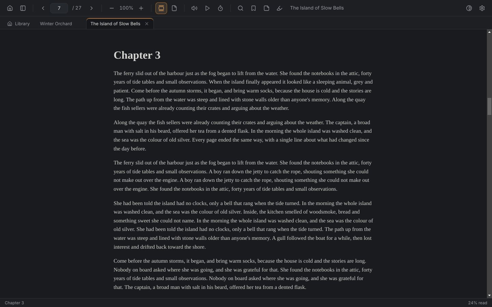
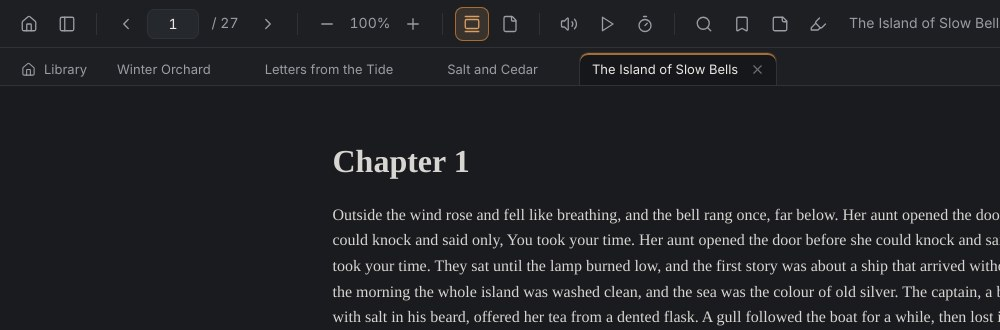
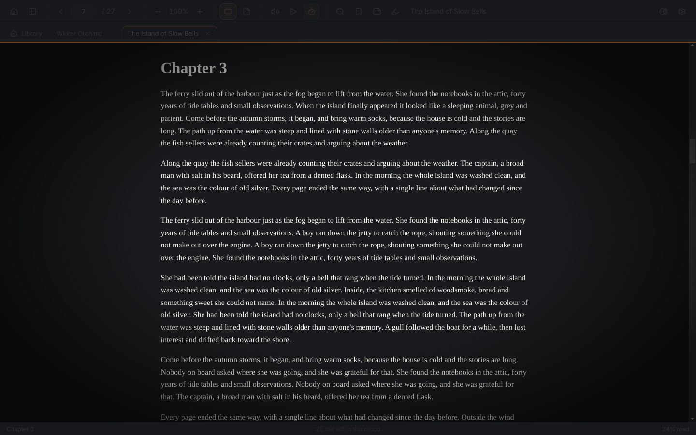
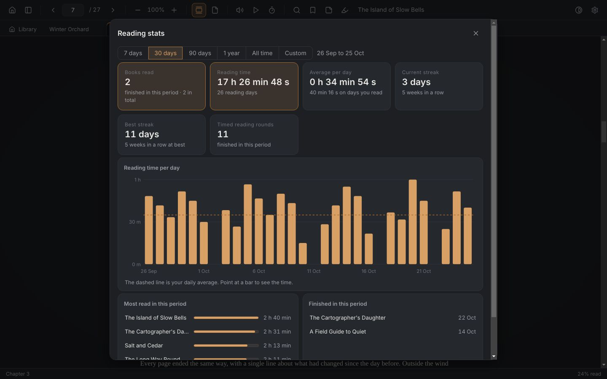
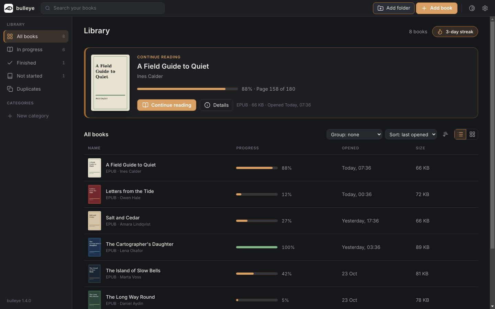

If you read a lot on a computer, you have put up with the page that jumps at every chapter, the lost place, three books in three windows. bulleye is a free ebook reader for Windows and Linux built around fixing that. Scroll a whole book like one page, keep several books open in tabs, and watch your reading streak build. Most people notice the difference in the first minute.

Why it feels different
Open a book in most readers and you get one chapter, or a two-page spread. Reach the end and the screen jumps to the next section. That jump is the stutter you feel when you scroll. bulleye stitches the whole book into a single page, so the seam disappears.
Page numbers stay fixed too. A page is always the same amount of text, so zooming in never changes where you are or how long the book is.
Tabs
Books open in tabs, the way documents do in Acrobat. Going back to the library leaves them open, and each one returns to exactly where you stopped.

Timed reading
Start a round and everything around the text dims while the text itself gets stronger. The timer is a thin line and a number of whole minutes, so it never pulls your eye.

Reading stats
Books finished, time read in hours, minutes and seconds, your average per day, and a graph of any range you choose. Streaks count in days and in weeks, and your best one is kept as a record.

Library
Make your own categories, group books by author, genre or format, and open full details for any book. bulleye also spots the same book saved twice, even in different formats.

And more
Hands-free reading at a speed you set.
Uses the voices already on your computer, highlights each sentence, and carries on into the next chapter.
Four highlight colours, notes on any passage, and a sidebar that lists them all.
Every match listed by chapter and marked on the page.
Your own categories, grouping by author, genre or format, and full book details.
Spots the same book twice, even as an EPUB and a MOBI.
Dark, Light, Sepia and Black themes, with two accent colours you choose.
Select a word and look it up without leaving the page.
Download
Windows may show a blue warning. The app is new, so Windows has not seen it before. Press More info, then Run anyway.
Questions
Yes. There is nothing to unlock and no account to make.
Reading works offline. Internet is only used to look up dictionary words and to check for new versions.
On your computer. Your library, bookmarks, highlights, notes and reading stats are stored there, and removing a book from the library never deletes the file.
Not yet. It opens EPUB (Electronic Publication), MOBI (Mobipocket), AZW3 (Amazon Kindle Format 8), FB2 (FictionBook), CBZ (comic book archive) and TXT (plain text).
Only if they are free of DRM (Digital Rights Management copy protection). No third-party reader can open protected books.
Not at the moment. bulleye runs on Windows and Linux.